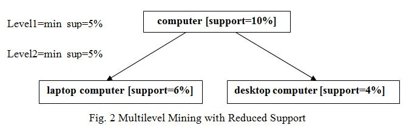

Q.6 What do you mean by multilevel association rules ? Discuss different variations to this approach.
Ans. Association rules generated from mining data at multiple levels of abstraction are called multiple-level or multilevel association rules. Multilevel association rules can be mined efficiently using concept hierarchies under a support-confidence framework. In general, a top-down strategy is employed, where counts are accumulated for the calculation of frequent itemsets at each concept level, starting at the concept level 1 and working downward in the hierarchy toward the more specific concept levels, until no more itemsets can be found. For each level, any algorithm for discover frequent itemsets may be used, such as Apriori or its variations. There are different of variations to this approach, where each variation involves “playing" with support threshold in a slightly different way. Some are described below -
(i) Uniform Support – The same minimum support used when mining at each level of abstraction. In fig.1, a minimum threshold of 5% is used throughout. Both “computer and laptop computer are found to be frequent, while “desktop computer” is not.

Fig. 1 Multilevel Mining with Uniform Support
When a uniform minimum support threshold is used, the search procedure is simplified. The method is also simple in that users are required to specify only one minimum support threshold. An Apriori-like optimization technique can be adopted, based on the knowledge that an ancestor is a superset of its descendants. The search avoids examining itemsets containing any item whose ancestors do not have minimum support.
The uniform support approach, however, has some difficulties. It is unlikely that items at lower levels of abstraction will occur as frequently as those at higher levels of abstraction. If the minimum support threshold is set too high, it could miss some meaningful associations occurring at low abstraction levels. If the threshold is set too low, it may generate mally uninteresting associations occurring at high abstraction levels.
(ii) Reduced Support - Each level of abstraction has its own minimum support threshold. The deeper the level of abstract ion, the smaller the corresponding threshold is. For example, in fig. 2, the minimum support thresholds for levels 1 and 2 are 5% and 3%, respectively. In this way, “computer" “laptop computer” and “desktop computer" are all considered frequent.
Fig. Multilevel Mining with Reduced Support
(iii) Group-based Support - Because users or experts often have insight as to which groups are more important than others, it is sometimes more desirable to set up user-specific, item, or group-based minimal support thresholds when mining multilevel rules. For example, a user could set up the minimum support thresholds based on product price, or on items of interest, such as by setting particularly low support thresholds for laptop computers and flash drives in order to pay particular attention to the association patterns containing items in these categories.